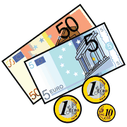
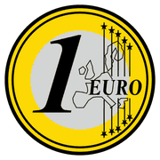
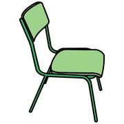
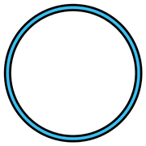

Dai giochi ai concetti, modulo 7
Contare e numero
Saper recitare i numeri non significa avere il numero. Il contare è uno strumento motorio; il numero è una conquista logica.
cardinale
e ordinale
Contare non è numero
 numeri
numeri tanti
tanti pochi
pochiUn bambino può dire «uno, due, tre…» fino a venti e non sapere ancora che l'ultimo numero detto indica quanti sono. Contare è un'azione; il numero cardinale nasce quando conteggi di realtà molto diverse danno lo stesso risultato.
I giochi in cui si conta sono moltissimi: nascondino, salti con la corda, battiti di mani mentre la palla è in aria.
Numerosità e valore

soldi
eurotantiNumerosità
Gli elementi contano tutti uguale: tre oggetti sono più di uno.
Valenza
Ogni elemento ha un valore convenzionale: una moneta da 2 euro vale più di tre monete da 50 centesimi.
Il passaggio dalla numerosità alla valenza prepara il valore posizionale delle cifre e il calcolo con i cambi.
attività
Giochi per il numero

sedia
cerchiocontareIl trenino dei posti
Infanzia 5 anni, prima primaria
- Si mettono a terra alcune sedie in fila e, in un'altra zona, alcuni cerchi.
- Al segnale ognuno occupa una sedia; al secondo segnale si passa nei cerchi, uno per cerchio.
- Chi resta fuori? Ci sono più sedie o più cerchi?
- Solo alla fine si conta, per verificare quello che si è scoperto.
Obiettivo
Confrontare quantità con la corrispondenza, poi verificare contando.
Domande per riflettere
- Come fai a saperlo senza contare?
- Se aggiungo un cerchio, che cosa succede?